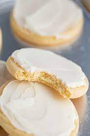

Sugar cookies

Oh dont they look so tasteful?
i will teach you how to make them!
Ingredients:
- 1 mid cups butter, softened
- 2 cups white sugar
- 4 eggs
- 1 teaspoon vanilla extract
- 5 cups all-purpose flour
- 2 teaspoons baking powder
- 1 teaspoon salt
Steps:
- In a large bowl, cream together butter and sugar until smooth. Beat in eggs and vanilla. Stir in the flour, baking powder, and salt. Cover, and chill dough for at least one hour (or overnight).
- Preheat oven to 400 degrees F (200 degrees C). Roll out dough on floured surface 1/4 to 1/2 inch thick. Cut into shapes with any cookie cutter. Place cookies 1 inch apart on ungreased cookie sheets
- Bake 6 to 8 minutes in preheated oven. Cool completely.